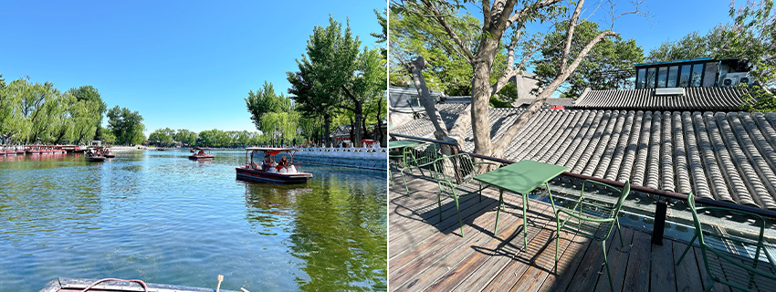
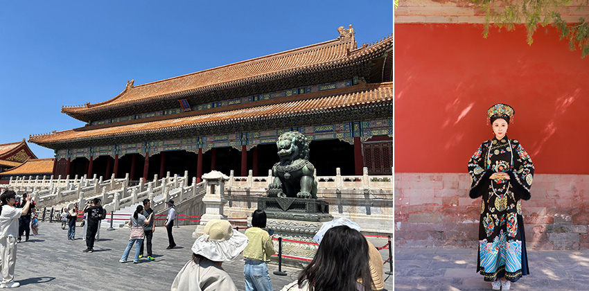
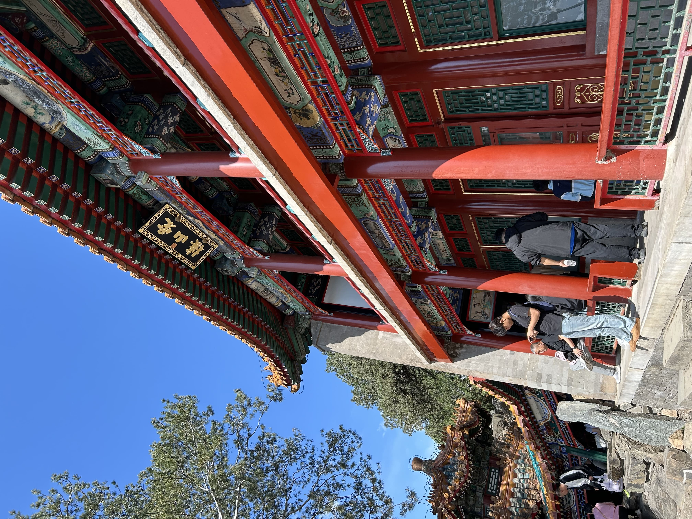
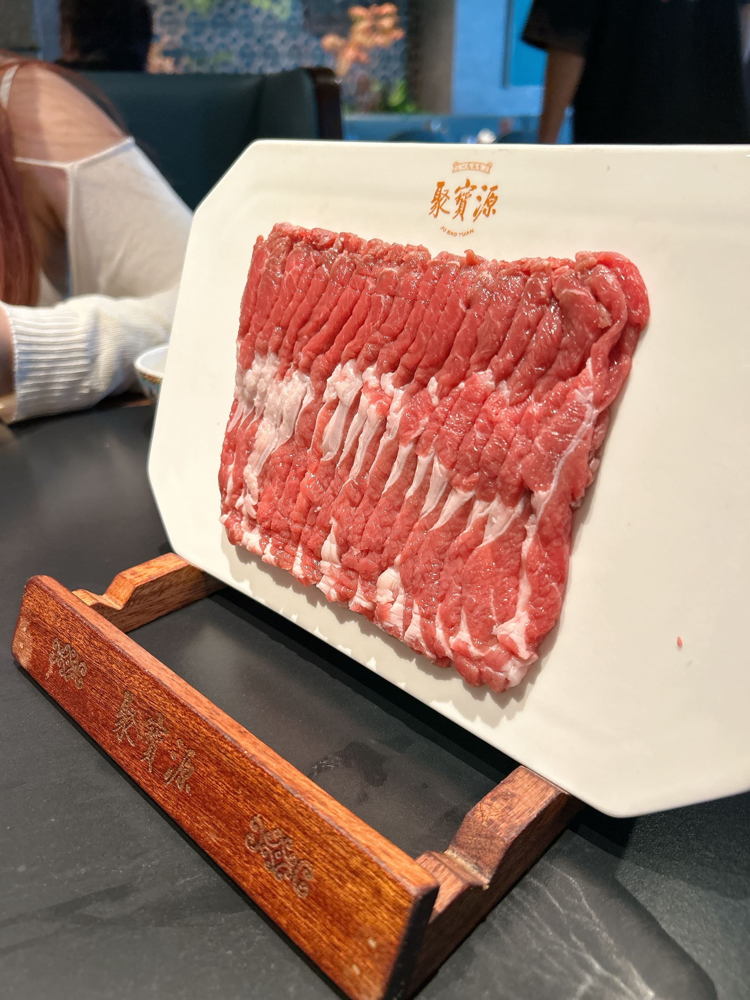

初見燕京：灰瓦與當代茶飲的交織
清晨五點，搭上接送車前往機場，開啟人生第一次的北京探索之旅。搭乘華航與大腕燒肉聯名的班機順利降落，五月末梢的北京用晴空迎接我。
抵達市區，在麗晶酒店寄放行李後，我直奔老北京的核心「什剎海」。坐在搖櫓船上聽船夫介紹周邊景點，微風拂面，這是對古城的第一印象。隨後漫步煙袋斜街與南鑼鼓巷，沿途的當代茶飲與傳統點心擦出有趣火花。「霸王茶姬」的茉莉奶茶非常好喝，「文宇奶酪」搭配紅豆泥綿密甜美。最驚豔的是「吳裕泰」的花茶冰淇淋，茶香濃郁且不甜。
黃昏時躲進「糖房咖啡」露台，眺望眼前綿延的北京灰瓦，古今交錯的視覺震撼在此刻達到頂點。晚餐在「四季民福」享用油亮烤鴨，鴨皮蘸白糖在舌尖化開的驚豔感、Q彈的酥皮蝦與清爽的巧拌豆苗，為第一天劃下完美句點。
 |
| ▲什剎海遊船 ▲糖房咖啡露臺看北京灰瓦 |
娘娘起駕：紫禁城的紅牆與歷史迴響
第二天一早前往王府世紀的「桃夭」做古裝妝造。當鏡中的自己戴上頭套、換上華麗的娘娘服、腳踩盆底鞋、戴上護甲，彷彿瞬間穿越。我和扮成格格的外甥女走向太廟，在莊嚴的紅牆下留下一張張極其出片的宮廷照。隨手買了杯瑞幸生椰拿鐵潤喉，便維持著澎湃心情卸妝，前往故宮。
故宮的兩小時真人導覽非常專業，導遊字正腔圓，帶著我們從午門一路走過太和殿，最後來到因《甄嬛傳》名聲大噪的壽康宮。站在歷史發生地聽著深宮往事，那份歷史厚重感令人動容。
夜晚的味蕾交給了「胡大飯館」，蒜蓉小龍蝦的醬汁拌入麵條堪稱一絕，滿滿膠質的香辣豬蹄充滿花椒香，辣得過癮。回飯店前體驗了發達的外送服務，竟然能將北京在地產的鮮草莓送上門，又大又紅、甜度爆表，成為每晚的療癒聖品。
 |
| ▲紫禁城一隅 ▲穿越大清 |
登臨長城：人潮中的歷史巨龍與足療撫慰
第三天參加慕田峪長城一日遊，搭乘纜車登長城。徒步走在敵樓之間，腳下的每塊石磚都刻滿歷史的滄桑，無奈正逢五一假期，塞滿了朝聖人潮。傍晚換到「諾岸酒店」，晚餐選擇「鴉兒李記」，鮮嫩的蝦滑搭配酸中帶甜的「糖蒜」，完美中和了肉類膩感。
連續兩天日行萬步，雙腿早已不堪負荷，於是前往「華夏良子」進行 80 分鐘足療。包廂內有舒服躺椅和大電視，還附贈宵夜酸辣粉與水餃，在師傅精準手藝下疲勞煙消雲散，一人折合台幣僅約 1250 元，CP 值極高。
藍瓦天壇與炙烤：穿梭在胡同與萬壽山下
第四天清晨用老北京「黑窯廠糖油餅」喚醒身體，麵皮裹著脆黑糖（單面雙糖）甜得恰到好處，搭配細緻綿密的「奶皮子酸奶」，驚豔無比。隨後前往天壇，祈年殿那頂帶著神聖光澤的琉璃藍瓦在陽光下閃閃發亮。下午在牛街白記排隊買了「驢打滾」，軟嫩白皮裹滿黃豆粉與紅豆泥，入口即化。晚餐的「劉記炙子烤肉」牛羊肉搭配酸菜香氣四溢，然而挑戰的「炸饅頭配灰色臭豆腐」卻成了此行唯一的味覺衝擊。
最後一天行程留給頤和園，從北宮門入園，高低落差極大的藏式建築「四大部洲」映入眼簾；隨後登臨最美景點「畫中游」，憑欄遠眺，昆明湖與精緻樓閣盡收眼底。無奈午後下起陣雨無法乘船，便在「聚寶源」享用熱騰騰的涮羊肉，那立於盤上不掉落的鮮切肉片搭配靈魂麻醬，為最後一餐畫下完美句點。
離境前，在五道營胡同喝了杯鐵手咖啡，買了紅花點心局的蝴蝶酥，便前往機場搭機返台。這趟北京首航有壯麗、有悠閒、有驚豔，都成為心中最斑斕的燕京記憶。
 |
| ▲頤和園畫中游 |
 |
| ▲聚寶源站立的羊肉 |